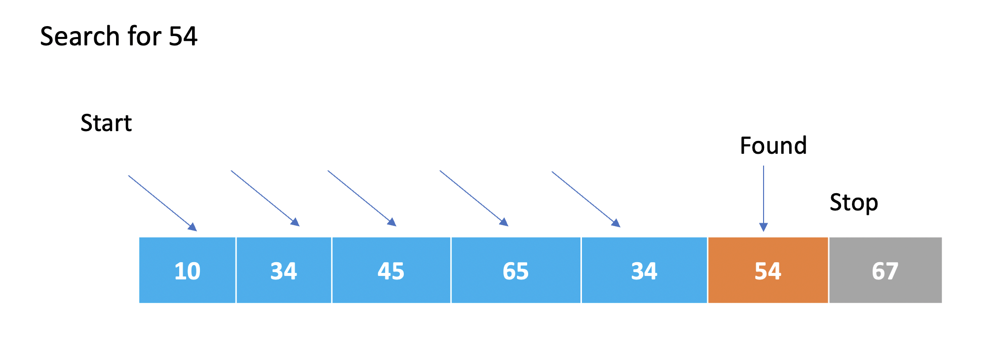

17. Search Algorithms
In this module, we will explore common algorithms and data manipulation techniques, such as sorting, searching, and graph algorithms. These algorithms appear in many GIS functions that we call. However, at times, when creating our our tools, we may want to implement our own versions of these algortithms, thus it is important to learn how these algorithms in the context of GIS. Below, we discuss several search algorithms commonly used in GIS:
Linear Search
Linear sesarch algorithms sequentially search through each element of a dataset until a match is found. After the first match is found, the program stops.
Linear Search Code- Example 1
Here is a real-world GIS use caseof a linear search algorithm. Let’s say you have a dataset containing information about different points of interest (POIs) in a city. Each POI has attributes like name, category, latitude, and longitude. You want to search for a specific POI based on its name using a linear search algorithm. The code below illustrates how this can be done.
# Sample dataset of points of interest (POIs)
poi_data = [
{"name": "Restaurant A", "category": "Restaurant", "latitude": 40.7128, "longitude": -74.0060},
{"name": "Park B", "category": "Park", "latitude": 40.7456, "longitude": -73.9870},
{"name": "Hospital C", "category": "Hospital", "latitude": 40.7309, "longitude": -73.9988},
{"name": "Museum D", "category": "Museum", "latitude": 40.7580, "longitude": -73.9855},
{"name": "Shopping Center E", "category": "Shopping", "latitude": 40.7410, "longitude": -73.9896}
]
# Function to perform linear search based on POI name
def linear_search_poi(poi_name):
for poi in poi_data:
if poi["name"] == poi_name:
return poi
return None # Return None if POI is not found
# Example usage
poi_name = "Hospital C"
found_poi = linear_search_poi(poi_name)
# Check if POI is found and print its details
if found_poi:
print("POI Found!")
print("Name:", found_poi["name"])
print("Category:", found_poi["category"])
print("Latitude:", found_poi["latitude"])
print("Longitude:", found_poi["longitude"])
else:
print("POI not found!")
In the above example, we have a dataset poi_data that represents various points of interest in a city. The linear_search_poi function performs a linear search through the dataset to find a specific POI based on its name. If the POI is found, its details are printed. Otherwise, it prints a message indicating that the POI was not found.
Note: The dataset poi_data is just a sample for illustration purposes. In a real-world scenario, you would typically have a larger dataset and may use data structures like spatial indices for efficient searching. The linear search algorithm shown here is useful when the dataset is small or when there are no specific indexing structures available.
Linear Search Code - Example 2
def search_country(countries, country_to_search):
for index, country in enumerate(countries):
if country == country_to_search:
return country
return None
countries = ["France", "Spain", "United Kingdom", "Italy", "Portugal", "Ireland", "Poland", "Norway"]
country_to_search = "USA"
matched_country = search_country(countries, country_to_search)
if matched_country:
print("We have a match. What do you want to do with", matched_country, "?")
else:
print("Country not found.")
The enumerate function is used to get both the index and value of each element. The index is not used in this case, so it is not included in the loop. For each iteration, the country variable represents the current country being examined. If the country matches the country_to_search, the function immediately returns the matching country using the return statement. If no match is found after looping through all countries, the function returns None to indicate that the country was not found.
** More on Linear Searches** - https://www.geeksforgeeks.org/linear-search/
While linear searches can be used in the GIS use cases such as Point of Interest (POI) Search, Attribute Query:, Coordinate Lookup, and Data Validation, their usage depends on the specific requirements, dataset size, and performance considerations. In practice, linear searches may not be the most efficient approach for large-scale GIS applications due to their time complexity of O(n), where n represents the size of the dataset.
GIS applications often deal with large volumes of spatial data, and as datasets grow in size, the performance of linear searches may become a limiting factor. In such cases, more advanced search algorithms and spatial indexing techniques are often preferred to optimize search operations and improve efficiency.
For example, in point of interest (POI) search or attribute queries, databases with spatial indexing capabilities (such as R-tree or Quadtree) are commonly employed to speed up the search process by exploiting spatial relationships and reducing the search space.
Similarly, network analysis tasks often utilize graph-based algorithms (e.g., Dijkstra’s algorithm) or spatial indexing techniques (e.g., network-based indexing) to efficiently find shortest paths or locate nearest facilities.
While linear searches can still be used for smaller datasets or simple applications, larger-scale GIS systems tend to rely on more optimized and efficient search algorithms to handle the complexities and scale of spatial data.
17.1. Binary Search*
In a binary search, the search space is divided in half in each iteration, resulting in a logarithmic time complexity. This means that as the size of the input (n) grows, the time it takes to perform the binary search increases at a much slower rate compared to linear search algorithms (O(n)).
The logarithmic time complexity of O(log n) indicates that the binary search algorithm is very efficient for large datasets. It can quickly locate the target value by reducing the search space in each step, making it much faster than linear search algorithms that examine each element sequentially.
It’s important to note that the O(log n) complexity assumes that the input list is sorted. If the list is not sorted, additional steps would be required to sort the list, which could increase the overall time complexity.
Binary Search Code - Example 1
def binary_search(arr, target):
low = 0
high = len(arr) - 1
while low <= high:
mid = (low + high) // 2
guess = arr[mid]
if guess == target:
return mid
elif guess < target:
low = mid + 1
else:
high = mid - 1
return -1
# Example usage
numbers = [2, 5, 7, 10, 15, 20, 25, 30]
target = 15
result = binary_search(numbers, target)
if result != -1:
print("Target found at index", result)
else:
print("Target not found in the list.")
The binary_search function takes two parameters: arr (the sorted list of numbers) and target (the value we are searching for).
It initializes two variables, low and high, to define the range of the search within the list. low is set to the index of the first element (0), and high is set to the index of the last element (len(arr) - 1).
Inside the while loop, the algorithm compares the target value with the middle element of the current range (arr[mid]). If they are equal, it means the target value has been found, and the function returns the index mid.
If the guess is less than the target, it means the target is likely in the right half of the range. The low index is updated to mid + 1 to search in the remaining higher indices.
If the guess is greater than the target, it means the target is likely in the left half of the range.
The high index is updated to mid - 1 to search in the remaining lower indices.
If the target is not found after iterating through the loop and the low index becomes greater than the high index, the function returns -1 to indicate that the target was not found in the list.
In the example usage section, a list called numbers and a target value of 15 are defined. The binary_search function is called with these inputs, and the returned result is stored in the variable result.
Finally, a conditional statement is used to check if the result is not equal to -1. If it is not -1, it means the target was found, and the corresponding message is printed. Otherwise, a message indicating that the target was not found is printed.
Specifying Binary Search
In Python, it is not necessary to explicitly specify that you want to perform a binary search when searching the attribute table of a shapefile. The process of searching for a value in the attribute table is typically handled by the underlying GIS library or module you are using, such as ArcPy or GDAL.
These GIS libraries often implement optimized search algorithms, including binary search, to efficiently search attribute tables. When you perform a search operation using functions provided by these libraries, the search algorithm used will be determined by the library itself based on the data structure and indexing methods employed.
Therefore, as a Python programmer, you typically don’t need to worry about specifying the search algorithm explicitly. Instead, you can rely on the GIS library to handle the search operation efficiently, ensuring optimal performance for attribute and spatial queries.
R-tree Search
Used for spatial indexing and searching in multi-dimensional space.
A tree data structure that hierarchically partitions the space into rectangular bounding boxes.
Enables efficient range searches and nearest neighbor searches in spatial datasets.
Quadtree Search
A tree data structure used for indexing and searching spatial data in two-dimensional space.
Divides the space into quadrants recursively, forming a tree structure.
Efficient for range searches and point location queries.
k-d Tree Search
A binary tree structure used for organizing k-dimensional data.
Each internal node partitions the space along one of the dimensions.
Enables efficient k-nearest neighbor searches and range searches.
Hash-based Search
Utilizes a hash function to map keys to array indices, enabling fast data retrieval.
Commonly used for attribute indexing and quick access to records based on a key value.
Grid-based Search
Divides the space into a regular grid of cells.
Enables efficient spatial indexing and retrieval operations.
Commonly used for raster data and grid-based spatial analysis.
** Raster Search**
Involves searching and retrieving information from raster datasets.
Involves techniques such as nearest neighbor search, resampling, and interpolation.
Network Search
Specific to network datasets, used for routing and network analysis.
Algorithms like Dijkstra’s Algorithm, A* Search, and breadth-first search are used to find the shortest path between network nodes.
Range Search
Searches for objects within a given spatial extent or distance.
Involves techniques like bounding box checks, range queries on spatial indices, and spatial overlays.
Nearest Neighbor Search
Identifies the closest objects to a given point or object.
Algorithms like k-d trees, R-trees, and spatial hashing are used to efficiently find nearest neighbors.
Spatial Hashing
Maps spatial objects to a hash table using a grid or hashing function.
Enables efficient spatial indexing and nearest neighbor searches.
17.2. References
Python Data Structures and Algorithms: https://youtu.be/HGOBQPFzWKo
Python Sorting Algorithms: https://youtu.be/JUOYkyCvMp8
Spatial Interpolation. https://www.geodose.com/2019/09/3d-terrain-modelling-in-python.html#google_vignette